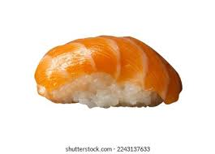

Sushi Recipe
Home

Description
This is my mom's simple and easy recipe for sushi rice. Can be modified to your taste
Ingredients
- 2 1/4 cup Japanese sushi-style rice
- 1 (4 inch) piece konbu dried kelp (Optional)
- 3 cup water
- 1/4 cup rice vineger
- 1/4 cup white sugar
- 1 1/4 teaspoons salt
Steps
- Place rice into a large, deep bowl. Fill with cold water and rubrice together
with hands until water turns milky white. Pour off cloudy water, being careful not to
pour out rice. Repeat 3 or 4 times until you can see rice through 3 inches of water.
- Drain rice in a fine strainer, then place into asaucepan along with konbu and 3 cups water. Allow
to tand for 30 minutes. Stir togeher rice vinegar,sugar, and salt until dissolved in a bow; set aside.
- Cover, and bring rice to a boil over high heat, then reduce heat to low, and
simmer for 15 minutes. Remove from heat and allow to stand, covered for 5 minutes.
- Scrape rice into a bow, remove and discard konbu. Stir in vinegar mixture until
well incorporatedand no lumps of rice remain. Allow to cool at room temperature. For a shinier appearance,
use an electric fan to cool rice rapidly